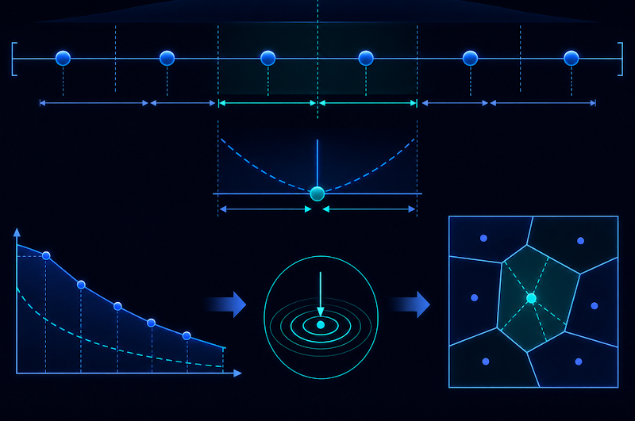
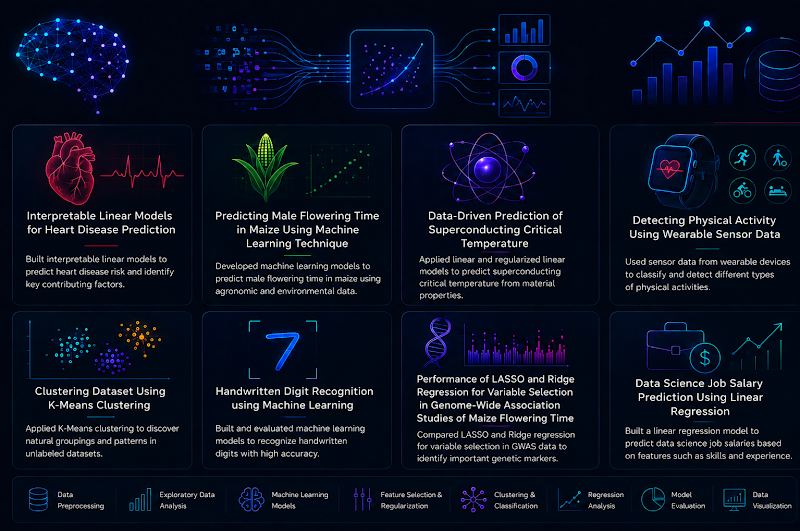

Research Overview
My research focuses on the development of mathematical, statistical, and machine learning methods for solving real-world problems in cybersecurity, artificial intelligence, and computational science. I am particularly interested in machine learning and deep learning for intrusion detection, DDoS attack analysis, and intelligent security systems, as well as broader theoretical and computational topics such as implicit models in machine learning, constrained quantization, and fluid-mechanics-based combustion modeling. Across these areas, my work combines mathematical modeling, data-driven methods, numerical simulation, and AI-based approaches to better understand complex systems and develop reliable, efficient, and interpretable solutions.
Research Projects
Implicit Models in Machine Learning
Implicit models are an emerging class of machine learning models that compute their outputs through iterative fixed-point updates rather than a single feedforward pass. Instead of directly learning a mapping from input to output, an implicit model learns an operator whose repeated application gradually converges to an equilibrium solution. This research direction focuses on understanding how simple implicit operators can represent complex input-output mappings through iteration.
Machine Learning in Cybersecurity
Machine learning and deep learning have become important tools for detecting and analyzing cyber threats in modern networked systems. This research direction focuses on developing data-driven models for cybersecurity applications, including DDoS attack detection, intrusion detection, IoT network security, and network behavior analysis. The goal is to identify malicious traffic patterns, improve attack detection accuracy, and support more reliable and intelligent cybersecurity systems.
The work builds on experience with machine learning and deep learning algorithms for DDoS cyberattack detection and intrusion detection system development. This research direction combines statistical learning, data science, and AI-based modeling to address practical cybersecurity challenges.
Some Selected Work
- Performance Analysis of Machine Learning Algorithms on Imbalanced DDoS Attack Dataset, Dipok Deb, Hansapani Rodrigo, Sanjeev Kumar, IEEE World AI IoT Congress (AIIoT), 2024. Link
- Application and Analysis of Machine Learning and Deep Learning Algorithms in Detection of DDoS Cyberattacks, Dipok Deb, M.S. Thesis, 2024. Link
- Comparative Evaluation of Machine Learning Models with Different Data Balancing Techniques for DDoS Attack Detection, Dipok Deb, Hansapani Rodrigo, Sanjeev Kumar, Submitted. Preprint

Constrained Quantization
Constrained quantization is a research area in probability and approximation theory that studies how to represent a probability distribution with a finite set of points while minimizing approximation error under certain constraints.
The research investigates how probability distributions can be approximated efficiently and how imposed constraints affect the structure of optimal quantizers. This work connects probability theory, statistical approximation, optimization, and mathematical analysis and provides insight into how continuous distributions can be represented using discrete structures.
Related Work
- Constrained Quantization for a Uniform Distribution, P. Biteng, M. Caguiat, D. Deb, M. K. Roychowdhury, and B. Villanueva, Houston Journal of Mathematics 50 (2024), no. 1, 121–142. Link
Fluid Mechanics and Knocking Combustion
This research focuses on the numerical study of knocking combustion, a complex fluid-mechanics and combustion phenomenon that occurs when end-gas autoignition generates strong pressure waves inside a combustion chamber. The project used a one-dimensional constant-volume reactor model to simulate premixed n-heptane/air combustion by coupling the compressible Navier–Stokes equations with detailed chemical kinetic mechanisms. This study investigated how equivalence ratio and initial temperature influence pressure-wave development, autoignition timing, heat release, and knocking intensity. Overall, this work helps explain how fuel-air mixture conditions affect pressure oscillations and combustion stability in engine-like systems.
Related Work
- The Effects of Equivalence Ratio on Pressure Wave Development during Knocking Combustion, Dipok Deb, M. A. Uddin, H. Terashima, N. Oshima, Journal of Scientific Research, 10(2), 117–131, 2018. Link

Coursework Projects in Data Science and Machine Learning
As part of my Ph.D. coursework in Data Science, Data Mining, and Machine Learning, I completed several applied machine learning and statistical modeling projects across healthcare, agriculture, materials science, sensor analytics, clustering, image recognition, genomics, and salary prediction. These projects involved data preprocessing, exploratory data analysis, model development, feature selection, regression, classification, clustering, and performance evaluation. Through these works, I gained hands-on experience applying machine learning methods to real-world datasets and interpreting model results for practical decision-making.
Projects
- Comparison of Sequential and Parallel Federated Learning for Privacy-Preserving COVID-19 Detection. Link
- Interpretable Linear Models for Heart Disease Prediction: A Comparative Study. Link
- Predicting Male Flowering Time in Maize Using Machine Learning Technique. Link
- Data-Driven Prediction of Superconducting Critical Temperature: A Linear and Regularized Linear Modeling Approach. Link
- Detecting Physical Activity Using Wearable Sensor Data. Link
- Clustering Dataset Using K-Mean Clustering. Link
- Handwritten Digit Recognition using Machine Learning. Link
- Performance of LASSO and Ridge Regression for Variable Selection in Genome-Wide Association Studies of Maize Flowering Time. Link
- Data Science Job Salary Prediction Using Linear Regression. Link